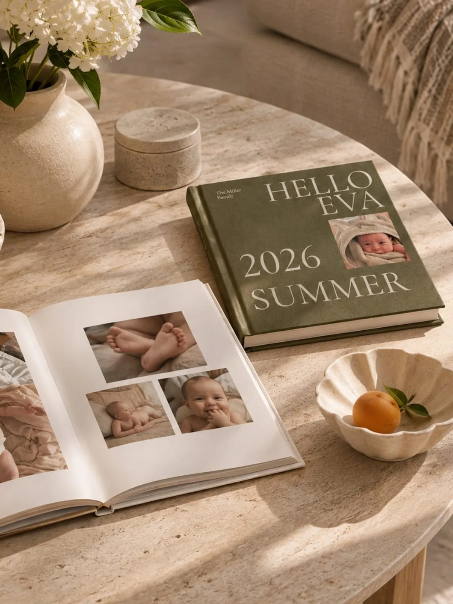

Daycare Memory Book: How to Turn 3 Years of Photos Into One Book
Updated Nov 2026 · by
Olga, designer at ReMeet, 10 years in editorial design
You have thousands of daycare photos scattered across your phone, the daycare's app, and a few shared albums. This guide explains how to turn all of them into a daycare memory book that covers the full arc from first drop-off to graduation. Share your album link, and I organize every photo by school year, design each page, and send you a proof in 72 hours. From $29.
Why daycare deserves its own book
Your child spends two, three, sometimes four years at daycare. That's where they learn to share, make their first real friends, paint with their fingers, and sit through circle time. It's a huge chapter of early childhood. But daycare photos are uniquely hard to organize because they come from so many places: your phone, your partner's phone, the daycare's daily reports, shared albums, group chats with other parents.

Most families end up with 500 to 2,000 photos by the time their child moves on to kindergarten. Those photos sit in different folders, apps, and cloud accounts. Nobody has time to sort through them. And the longer you wait, the harder it gets to remember which teacher was in which classroom or which kid was your child's best friend in the two-year-old room.
A daycare memory book fixes that. One book. The whole story. First day through graduation.
What to include in a daycare memory book
The big milestones are easy to remember. But the smaller, everyday shots are what make the book feel real. Here's what I look for when I'm putting one together:
- The first drop-off (even if your child was crying)
- Classroom photos with teachers and friends
- Art projects, finger paintings, handprint crafts
- Field trips to the pumpkin patch, fire station, or local park
- Holiday concerts and costume parades
- Birthday celebrations at school
- Nap time, snack time, playground time
- The last day of each school year
- Graduation day with the tiny cap and gown
Don't worry about curating a perfect set. Send me everything you have. I sort through duplicates, skip the blurry ones, and pick the shots that tell the story best. The messy camera roll is always better source material than a pre-selected handful.
Organizing by school year
The simplest structure for a daycare memory book is one section per school year. Each year gets a title page, and the photos flow chronologically within that section. A three-year daycare journey might look like this:

| Section | What goes in |
|---|
| Year 1 (Infant/Toddler) | First drop-off, learning to walk at school, first friends, holiday party, summer splash day |
| Year 2 (Twos Room) | New classroom, new teachers, art projects, birthday at school, field trip, class photo |
| Year 3 (Pre-K) | Big kid classroom, writing their name, best friends, holiday concert, graduation ceremony |
If your child was at daycare for two years or four years, the structure adjusts to match. The point is that each section marks a clear chapter so anyone flipping through the book can follow the progression. Full-page photos of artwork or group shots break up the chapters nicely.
Start your daycare memory book
Share your album link. I'll organize by school year, design every page, and send you a proof in 72 hours.
Start your book - from $29 →
How many photos do you actually need?
Less than you think. Here's a rough guide:
| Book size | Photos to send | Best for |
|---|
| 30 pages ($29) | 100-300 | One school year, or a highlights-only book |
| 100 pages ($79) | 300-800 | Two to four years, the full daycare journey |
You can always send more. I accept up to 5,000 photos per book. The AI filters out duplicates and near-identical shots first, then I hand-pick the best ones for the final layout. More photos means more options, so don't hold back.
Working with photos from the daycare's shared albums
Most daycares use an app like Brightwheel, HiMama, or Tadpoles to share daily photos with parents. Some use a shared Google Photos album or a private Facebook group. These photos are valuable because they show moments you never witness: your kid concentrating on a puzzle, laughing with friends at the lunch table, sleeping on a cot during nap time.
Here's how to get those photos into your book:
- Download the photos from the daycare app to your phone or computer
- Add them to a Google Photos album along with your own photos
- Share the album link with me
If the photos are low resolution (some daycare apps compress images), they still work fine for smaller placements on the page. I reserve full-bleed spreads for the higher-resolution shots from your own phone.
Adding artwork and keepsakes

Daycare art projects pile up fast. You can't keep every finger painting forever, but you can photograph them and include the best ones in the book. Lay each piece flat, snap a photo in natural light, and add the image to your album. Handprint turkeys, macaroni crafts, holiday cards, and "My Family" drawings all work well as full-page elements or small inserts between photo pages.
Report cards, teacher notes, and funny quotes your child said at school also fit. Photograph the document and I'll place it in the layout where it makes sense chronologically.
Gift idea: a book for the teacher
At the end of the year, some parents collect photos from the whole class and make a book for the teacher. Create a shared album, ask other parents to add their photos, and I'll design a class memory book with all the highlights from the year. It's a meaningful gift that costs $29 for the design plus $69 for a printed copy.
Pricing
| What you get | Price |
|---|
| Designed PDF, up to 30 pages | $29 |
| Designed PDF, up to 100 pages | $79 |
| Photo selection add-on | +$25 |
| Printed hardcover | From $69 after approval |
| Printed premium layflat | From $129 after approval |
| Extra printed copy | $69 |
| Shipping (US, Canada) | Included |
| Shipping (Europe) | +$15 |
For one school year, the 30-page book at $29 works well. If you want to cover the full daycare journey across two to four years, the 100-page option at $79 gives plenty of room. The photo selection add-on at $25 is helpful when you have over 1,000 photos and want me to pick the strongest ones rather than pre-selecting yourself. More about what's included.
Frequently asked questions
How many photos do I need for a daycare memory book?
For a 30-page book covering one school year, 100-200 photos is a good starting point. For a 100-page book covering two to four years, 300-800 photos gives plenty of variety. Send everything you have. I sort through duplicates and blurry shots and pick the best ones for the layout.
Can I use photos from the daycare's shared album?
Yes. Download the photos from your daycare's app or shared album (Brightwheel, HiMama, Tadpoles, Google Photos, etc.) and add them to the album you share with me. I can work with any photo format and resolution. Photos taken by teachers often capture moments you never see, so they add a lot to the book.
What if the photos span multiple years?
That's the whole idea. I organize them by school year so the book reads like a timeline. Each year gets its own section with a title page. You can see how your child grew, changed classrooms, and made new friends over the full daycare journey.
Can I include my child's artwork in the book?
Yes. Photograph or scan the artwork and add those images to your album. Finger paintings, drawings, handprint crafts, and holiday projects all work well as full-page spreads or small collage elements between photo pages.
Do you ship internationally?
Printed books ship to the US, Canada and Europe. US and Canada shipping is included, Europe is +$15. The designed PDF works worldwide. You can also print it at any local shop.
Start your daycare memory book
Share your album link. I'll organize by school year, design every page, and send you a proof in 72 hours.
Start your book - from $29 →